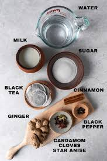

How to Prepare Masala Chai ☕

Ingredients:
- 1 cup water
- 1 cup milk
- 2 tsp black tea leaves
- 1 inch crushed ginger
- 2–3 cardamom pods
- 1 small cinnamon stick
- 2 cloves
- Sugar to taste
Steps:
- Boil water with spices
- Add tea leaves & boil
- Add milk and sugar
- Simmer 2–3 mins
- Strain and enjoy